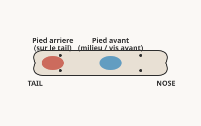
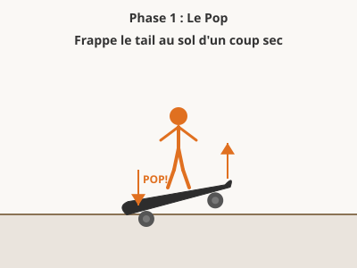
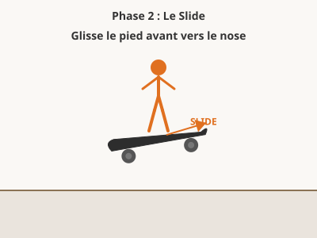
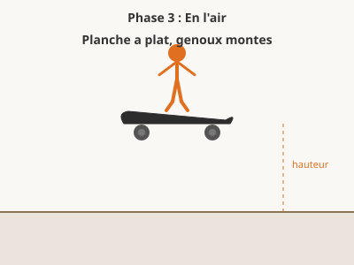
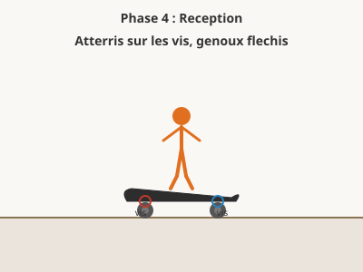

Description
Le ollie consiste a faire decoller la planche du sol sans utiliser les mains. C'est le premier trick aerien a maitriser et la porte d'entree vers tous les autres tricks (kickflip, heelflip, etc.).
Prerequis
- Savoir rouler en equilibre
- Etre a l'aise avec le pied arriere sur le tail
Position des pieds

Pied arriere
Sur le tail (l'extremite arriere), orteils centres
Pied avant
Au milieu de la planche, legerement en retrait des vis avant
Les 4 phases du Ollie




Etapes detaillees
- Roule a vitesse moderee, genoux flechis, regard vers l'avant.
- Frappe le tail au sol avec le pied arriere d'un coup sec.
- Au moment ou le tail touche le sol, saute en l'air avec les deux jambes.
- Glisse le cote de ton pied avant vers le nose pour egaliser la planche.
- Monte les genoux pour laisser la planche monter avec toi.
- Atterris avec les deux pieds au-dessus des vis, genoux flechis pour amortir.
Progression d'apprentissage
Statique
Comprendre et memoriser les gestes de base a l'arret
Pop seul
Frappe le tail au sol avec le pied arriere sans sauter.
20 pops d'affilee sans perdre l'equilibre
Slide seul
Pied avant pose a plat, glisse-le vers le nose en flechissant la cheville.
20 slides d'affilee
Pop + slide combines
Frappe le tail, puis immediatement glisse le pied avant vers le nose.
10 ollies statiques avec decollage visible
En roulant lentement
Reproduire le geste en mouvement a faible vitesse
Ollie en ligne droite
Roule a vitesse de marche et fais un ollie basique.
10 ollies propres d'affilee sans tomber
Ollie avec timing
Concentre-toi sur le timing : pop sec, slide rapide, reception souple.
10 ollies avec planche bien a plat en l'air
Ollie a vitesse normale
Augmente progressivement la vitesse de roulage.
10 ollies propres a vitesse normale
Par-dessus un obstacle
Ajouter de la hauteur et un objectif concret a viser
Obstacle rasant (2-3 cm)
Place un crayon ou une ficelle au sol et passe par-dessus.
5 passages propres consecutifs
Obstacle moyen (5-10 cm)
Utilise une chaussette roulee ou une petite boite.
5 passages propres consecutifs
Obstacle haut (15-20 cm)
Un cone, une bouteille couchee, ou une planche posee a plat.
3 passages propres consecutifs
En situation
Utiliser le ollie dans des contextes reels de skate
Monter un trottoir
Approche un trottoir bas de face et ollie pour monter dessus.
5 montees propres d'affilee
Descendre une marche
Ollie en arrivant au bord d'une marche pour atterrir en bas.
5 descentes propres d'affilee
Enchainer plusieurs ollies
Fais 3 ollies d'affilee en roulant, espaces de quelques metres.
3 series de 3 ollies
Exercices pratiques
Le pop metronome Phase 1
A l'arret, frappe le tail au sol en rythme regulier comme un metronome. Compte 1-2-3-pop, 1-2-3-pop. Le but est d'avoir un son sec et identique a chaque frappe.
Le slide chaussette Phase 1
Enfile une chaussette par-dessus ta chaussure sur le pied avant. Entraine le mouvement de slide : le tissu doit glisser facilement sur le grip.
Le ollie ligne Phase 2
Trace une ligne a la craie sur le sol. Roule vers la ligne et fais un ollie pour la franchir. La ligne donne un repere visuel pour declencher le pop au bon moment.
Le ollie mur Phase 2
Place-toi a cote d'un mur. Fais un ollie et essaie de laisser une marque de grip sur le mur avec le cote de ta chaussure. Mesure la hauteur pour suivre ta progression.
L'echelle d'obstacles Phase 3
Prepare 5 obstacles de hauteurs croissantes : stylo (1 cm), chaussette (3 cm), canette (7 cm), boite (12 cm), cone (18 cm). Passe-les dans l'ordre.
Le parcours ollie Phase 4
Installe 3 petits obstacles espaces de 3 metres. Roule et ollie chaque obstacle sans t'arreter. Augmente la vitesse et reduis l'espacement.